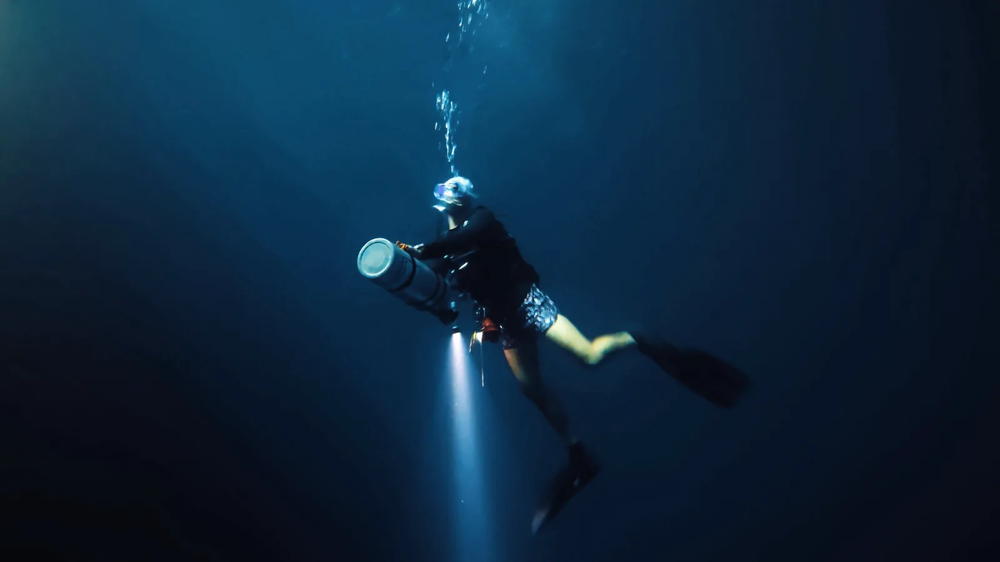

← All projects
03 / 05
A Different Planet
- Type
- Underwater photo & film
- Year
- 2026
An underwater series: reefs, a sunken aircraft and a feeding sea turtle, published as photographs and short clips.





Watch & view

An underwater series: reefs, a sunken aircraft and a feeding sea turtle, published as photographs and short clips.
